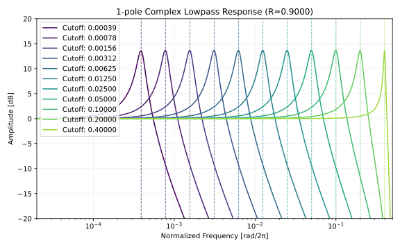
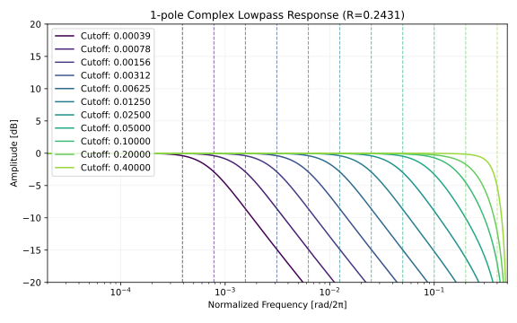

何かあれば GitHub のリポジトリに issue を作るか ryukau@gmail.com までお気軽にどうぞ。
Update: 2026-06-28
複素レゾネータの式を変えて遊んでいたところ、以下のローパスフィルタを見つけました。適当に
0 をナイキスト周波数に置いて、レゾナンスのパラメータ R
を勘でチューニングしています。 b
はユニティーゲインとなるようにしています。
import numpy as np
class ComplexLowpass1:
def __init__(self):
self.x1 = 0
self.y1 = 0
def process(self, x0, cutoffNormalized, R):
"""
cutoffNormalized in [0, 0.5).
R in [0, 1].
"""
cut = np.exp(2j * np.pi * cutoffNormalized)
res = np.exp(cut.imag * np.log(R))
a = cut * res
b = (1 - a) / 2
self.y1 = b * (x0 + self.x1) + a * self.y1
self.x1 = x0
return self.y1.real以下は周波数特性です。レゾナンスのピークはカットオフ周波数と一致しており、ゲインも一定です。レゾナンスの幅は対数軸上でほぼ一定に見えますが、ナイキスト周波数の近くでは狭くなっています。

以降では挙動の理由付けを行います。
以下はコード中の差分方程式です。
y1 = b * (x0 + x1) + a1 * y1数式にします。
\[ y[n] = b \cdot (x[n] + x[n-1]) + a \cdot y[n-1]. \]
\(k\) サンプルの遅延を \(z^{-k}\) として、z 領域での表現に変えます。
\[ \begin{aligned} Y(z) &= b(X(z) + z^{-1}X(z)) + a z^{-1} Y(z) \\ Y(z)(1 - a z^{-1}) &= b(1 + z^{-1})X(z) \\ \end{aligned} \]
\(\dfrac{Y(z)}{X(z)}\) が複素伝達関数 \(H\) です。
\[ H(z) = \frac{b(1 + z^{-1})}{1 - a z^{-1}}. \]
\[ \newcommand{\re}[1] {#1_{\mathrm{r}}} \newcommand{\im}[1] {#1_{\mathrm{i}}} \]
コードと一致する実数の伝達関数 \(\re{H}\) を求めます。 \(^*\) は複素共役です。下付き文字の \(\re{}\) は実部、 \(\im{}\) は虚部です。
\[ \begin{aligned} \re{H}(z) &= \frac{1}{2} \left( H(z) + H^*(z) \right) \\ &= \frac{1+z^{-1}}{2} \left( \frac{b}{1-a z^{-1}} + \frac{b^*}{1-a^* z^{-1}} \right) \\ &= \frac{1+z^{-1}}{2} \left( \frac{ (b + b^*) - (b a^* + b^* a)z^{-1} }{ 1 - (a + a^*)z^{-1} + (a a^*)z^{-2} } \right) \\ &= \frac{1+z^{-1}}{2} \left( \frac{ 2 \text{Re}(b) - 2 \text{Re}(b a^*)z^{-1} }{ 1 - 2 \mathrm{Re}(a)z^{-1} + |a|^2 z^{-2} } \right) \\ &= \frac{ \re{b} + \left( \re{b} - \text{Re}(b a^*) \right) z^{-1} - \text{Re}(b a^*) z^{-2} }{ 1 - 2 \re{a} z^{-1} + |a|^2 z^{-2} } \\ &= \frac{ \re{b} + (\re{b} - \re{b} \re{a} - \im{b} \im{a})z^{-1} - (\re{b} \re{a} + \im{b} \im{a})z^{-2} }{ 1 - 2\re{a}z^{-1} + (\re{a}^2 + \im{a}^2)z^{-2} }. \end{aligned} \]
以下は連続系での 1 次ローパス (RC フィルタ) の伝達関数です。 \(\omega_a\) が極です。
\[ H_{cont.}(s) = \frac{1}{1 + s / \omega_a}. \]
\(s\) に以下の値を代入してバイリニア変換します。 \(T\) は秒数で表されたサンプリング周期です。
\[ s = \frac{2}{T} \cdot \frac{1 - z^{-1}}{1 + z^{-1}}. \]
整理した式です。
\[ H(z) = \frac{1 + z^{-1}}{\left( 1 + \sigma \right) + \left( 1 - \sigma \right) z^{-1}} , \quad \sigma = \frac{2}{T \omega_a}. \]
ゲインを 1 に正規化します。
\[ H(z) = b \cdot \frac{1 + z^{-1}}{1 - a z^{-1}}, \quad b = \frac{1}{1 + \sigma}, \quad a = -\dfrac{1 - \sigma}{1 + \sigma}. \]
ここで \(a\) は \(H(z)\) の極です。また \(b = \dfrac{1 - a}{2}\) の関係も成立します。
Cookbook
formulae for audio EQ biquad filter coefficients
で紹介されているローパス (LPF) とバンドパス (BPF) の和で
ComplexLowpass1 と同じ出力が得られます。
\[ \re{H}(z) = H_{\text{LPF}}(z) + \frac{1}{2} H_{\text{BPF, 0 dB peak}}(z). \]
以下は検証に使ったコードです。
import numpy as np
class ComplexLowpass:
def __init__(self):
self.x1 = 0
self.y1 = 0
def process(self, x0, cutoffNormalized, R):
cut = np.exp(2j * np.pi * cutoffNormalized)
res = np.exp(cut.imag * np.log(R))
a = cut * res
b = (1 - a) / 2
self.y1 = b * (x0 + self.x1) + a * self.y1
self.x1 = x0
return self.y1
class BiquadFilter:
def __init__(self):
self.x1 = 0
self.x2 = 0
self.y1 = 0
self.y2 = 0
def process(self, x0, b0, b1, b2, a0, a1, a2):
y0 = (b0 * x0 + b1 * self.x1 + b2 * self.x2 - a1 * self.y1 - a2 * self.y2) / a0
self.x2 = self.x1
self.x1 = x0
self.y2 = self.y1
self.y1 = y0
return y0
np.random.seed(42)
inputs = np.random.randn(1000)
cutoffNormalized = 0.15
R = 0.9
clp = ComplexLowpass()
output_clp = np.array([clp.process(x, cutoffNormalized, R).real for x in inputs])
cut = np.exp(2j * np.pi * cutoffNormalized)
res = np.exp(cut.imag * np.log(R))
a = cut * res
alpha = (1 - abs(a) ** 2) / (1 + abs(a) ** 2)
cos_w0 = 2 * a.real / (1 + abs(a) ** 2)
a0 = 1 + alpha
a1 = -2 * cos_w0
a2 = 1 - alpha
b0_lpf = (1 - cos_w0) / 2
b1_lpf = 1 - cos_w0
b2_lpf = (1 - cos_w0) / 2
b0_bpf = alpha
b1_bpf = 0
b2_bpf = -alpha
lpf_filt = BiquadFilter()
bpf_filt = BiquadFilter()
output_biquads = []
for x in inputs:
y_lpf = lpf_filt.process(x, b0_lpf, b1_lpf, b2_lpf, a0, a1, a2)
y_bpf = bpf_filt.process(x, b0_bpf, b1_bpf, b2_bpf, a0, a1, a2)
output_biquads.append(y_lpf + 0.5 * y_bpf)
output_biquads = np.array(output_biquads)
max_diff = np.max(np.abs(output_clp - output_biquads))
print(f"Max absolute difference: {max_diff:.2e}")
assert max_diff < 1e-12カットオフ周波数が低いとき、レゾナンス R
はバイクアッドフィルタの \(Q\)
とおよそ以下のような関係があるようです。
\[ R \approx e^{\normalsize -\frac{1}{Q}}. \]
\(Q = 1/\sqrt{2}\) のとき
maximally flat となり、 \(R\)
はおよそ 0.243 です。
以下は maximally flat
としたときの振幅特性です。慣例である振幅特性が -3 dB
となる点とカットオフ周波数が一致していません。
ComplexLowpass1
はカットオフ周波数を極の位置と定義しているためです。

C++ 20 です。
#include <cmath>
#include <complex>
#include <concepts>
#include <numbers>
template<std::floating_point T> class ComplexLowpass1 {
private:
T x1{};
std::complex<T> y1{};
public:
void reset() {
x1 = T(0);
y1 = T(0);
}
T process(T x0, T cutoffNormalized, T R) {
cutoffNormalized = std::clamp(cutoffNormalized, T(0), T(0.5));
R = std::clamp(R, T(0), T(0.5));
const T theta = T(2) * std::numbers::pi_v<T> * cutoffNormalized;
const auto cut = std::polar(T(1), theta);
const T res = std::exp(cut.imag() * std::log(R));
const auto a1 = cut * res;
const auto b = (T(1) - a1) / T(2);
y1 = b * (x0 + x1) + a1 * y1;
x1 = x0;
return y1.real();
}
};以下はローパスと同様のアイデアで適当にでっち上げたハイパスとオールパスです。
import numpy as np
class ComplexHighpass1:
def __init__(self, cutoffNormalized, R):
theta = 2 * np.pi * cutoffNormalized
self.a1 = R * np.exp(1j * theta)
self.x1 = 0
self.y1 = 0
gain = (1 + self.a1) / 2
self.b = gain
def process(self, x0):
self.y1 = self.b * (x0 - self.x1) + self.a1 * self.y1
self.x1 = x0
return self.y1
class ComplexAllpass1:
def __init__(self, cutoffNormalized, R):
theta = 2 * np.pi * cutoffNormalized
self.a1 = R * np.exp(1j * theta)
self.b1 = R / np.exp(1j * theta).conj()
self.x1 = 0
self.y1 = 0
def process(self, x0):
self.y1 = x0 + self.b1 * self.x1 - self.a1 * self.y1
self.x1 = x0
return self.y1